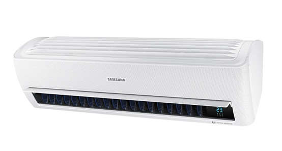

Samsung Electronics to Launch Wind-Free Air Conditioner at CES 2017
Samsung Electronics today announced it will unveil its first ever, award-winning Wind-Free™ wall-mounted air conditioner at CES 2017 in Las Vegas, following the huge success of its floor-standing Wind-Free™ air conditioner in South Korea. The AR9500M air conditioner has integrated Samsung’s exclusive Wind-Free™ Cooling technology into its design – providing customers with a cooler indoor climate and optimal energy efficiency without the discomfort of direct cold airflow.
The AR9500M provides customers with the ideal condition by maintaining the comfortable room temperature, using Wind-Free™ Cooling to gently disperse cold air through 21,000 micro air holes. A two-step cooling system which first lowers tempertures in “Fast Cooling Mode” and then automatically switches to “Wind-Free™ Cooling Mode” creating “still air” once the desired temperature is reached. This approach can also reduce energy consumption by up to 72 percent compared to Fast Colling mode